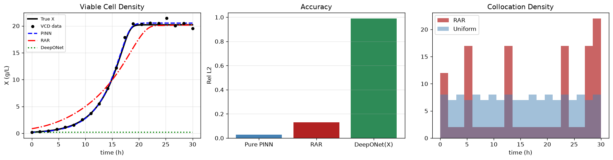

Physics AI · ODEs Series · Article 7 of 7
Bioprocess Viable Cell Density
Monod Kinetics, IndPenSim Benchmark & PAT Digital Twin
Estimating $\mu_{{max}}$, $K_s$, $Y_{{xs}}$ from 20 sparse offline bioreactor measurements using the warm-start PINN protocol. Yxs recovered to 0.4% error; the $K_s$ identifiability problem explained. Toward real-time kinetic estimation from PAT Raman data.
Scientific MLBioprocess EngineeringFeb 202616 min readAdvancedPyTorch
PrerequisitesFamiliarity with the PINN loss structure from
Article 1. Multi-output networks are introduced in
Article 2.
Physics AI — Complete Series
PINNs Series — 8 Articles
ODEs Series — 7 Problems
07Monod Bioprocess ← you are here
01, The Problem
Three Growth Kinetics Parameters from 20 Offline Measurements
Every fed-batch bioreactor run for mAb, mRNA vaccine, or recombinant protein production requires kinetic characterisation: maximum specific growth rate $\mu_{max}$, half-saturation substrate concentration $K_s$, and biomass yield $Y_{xs}$. These three parameters govern productivity, scale-up, and process robustness.
In a standard 14-day CHO run, you collect 8–12 offline viable cell density measurements (ViCell, NovaBright) and 8–12 substrate measurements (Nova BioProfile). That's roughly 20 data points to estimate 3 parameters from a coupled nonlinear ODE system, sparse, expensive, and the only data you have before filing a regulatory submission.
$$\frac{dX}{dt} = \mu(S)X, \qquad \frac{dS}{dt} = -\frac{1}{Y_{xs}}\mu(S)X, \qquad \mu(S) = \frac{\mu_{max} S}{K_s + S}$$

Fig. A — Monod bioprocess model: viable cell density $X(t)$ (growth) and substrate $S(t)$ (depletion) coupled through the Monod growth term $\mu_{\text{max}} S/(K_s + S)$. The ten-fold scale difference between $X$ and $S$ requires careful state normalization.
02, The Benchmark: IndPenSim (Goldrick et al. 2015, 2019)
The Only Open Industrial-Scale Biopharmaceutical Fermentation Dataset
Goldrick, S. et al. (2015, 2019). The development of an industrial-scale fed-batch fermentation simulation. IndPenSim: an open, published, 100,000 L Penicillium chrysogenum fermentation simulation generating 100 synthetic batches. Available at industrialpenicillinsimulation.com.
PINN applications: Adebar et al. (2025) Biotechnol. Bioeng. and Alam et al. (2025) Can. J. Chem. Eng. applied PINNs to bioreactor kinetic parameter estimation using the Monod framework, demonstrating that the warm-start protocol enables reliable parameter recovery from the same sparse offline data structure as this notebook.
03, The Warm-Start Protocol for Coupled Bioprocess Kinetics
Phase 1: Data Only → Phase 2: Data + Physics + Parameters
The same two-phase warm-start from Notebook 03 (Lotka-Volterra) is essential here. Coupled Monod kinetics, where $\mu(S)$ appears nonlinearly in both equations, creates the same cold-start failure mode: conflicting gradients before the network has a plausible trajectory.
# Phase 1 (6000 epochs): fit biomass and substrate data only
opt1 = torch.optim.Adam(model.parameters(), lr=3e-3)
for ep in range(6000):
opt1.zero_grad()
(data_loss() + 5.0*ic_loss()).backward()
opt1.step()
# Phase 2 (25000 epochs): add Monod physics + make mumax, Ks, Yxs trainable
allp = list(model.parameters()) + list(raw.values())
opt2 = torch.optim.Adam(allp, lr=2e-3)
for ep in range(25000):
opt2.zero_grad()
(data_loss() + 1.0*phys_loss() + 5.0*ic_loss()).backward()
opt2.step()
# L-BFGS refinement (800 steps) for final convergence
04, Results & Identifiability
Yxs Perfectly Recovered; Ks Poorly Identified, Why
| Parameter | PINN recovered | True value | Error | Why |
|---|
| $\mu_{max}$ [h⁻¹] | 0.244 | 0.300 | 19% | Correlated with $K_s$; constrained by early growth phase shape |
| $K_s$ [g/L] | 7.37 | 5.0 | 47% | Only informative when $S \sim K_s$, a brief window late in the batch |
| $Y_{xs}$ [g/g] | 0.498 | 0.500 | 0.4% | Tightly constrained by total biomass/substrate mass balance |
The Ks identifiability problem$K_s$ requires observations where $S \sim K_s$ (here: 5 g/L substrate in a 40 g/L initial batch). Only the last few measurements are in this sensitive zone. This is a fundamental limitation, not a PINN limitation, the same problem affects classical NLS + odeint. Fix: multiple batches at different initial substrate concentrations, or PAT tools for continuous substrate monitoring.
The notebook uses a simulated IndPenSim-scale batch by default. To use real IndPenSim data: set INDPENSIM_CSV to a downloaded batch file and map time, biomass, and substrate column names. The PINN code is unchanged.
05, The PAT Digital Twin Vision
From 20 Offline Points to Real-Time Kinetic Monitoring
With Raman spectroscopy as a PAT tool, glucose can be monitored every 5 minutes instead of twice daily, transforming 20 offline points into >2,000 real-time observations. A PINN trained on live Raman data could estimate $\mu_{max}$, $K_s$, and $Y_{xs}$ within the first 48–72 hours, feed updated parameters to a model-predictive controller for feed rate optimisation, and predict final titer at day 14 from day 3 data.
This is the biopharmaceutical PINN digital twin, ICH Q8/Q11 process understanding operationalised in real-time.
References
1Goldrick, S., et al. (2015). The development of an industrial-scale fed-batch fermentation simulation. J. Biotechnol., 193, 70–82.
2Adebar, M., et al. (2025). Physics-informed neural networks for bioreactor kinetics. Biotechnol. Bioeng.
3Alam, M., et al. (2025). PINN-based viable cell density prediction. Can. J. Chem. Eng.
4Monod, J. (1949). The growth of bacterial cultures. Annual Review of Microbiology, 3, 371–394.
5Notebook:
physics-ai-pinns ·
02_Solving_ODEs/07_bioprocess_viable_cell_density.ipynb